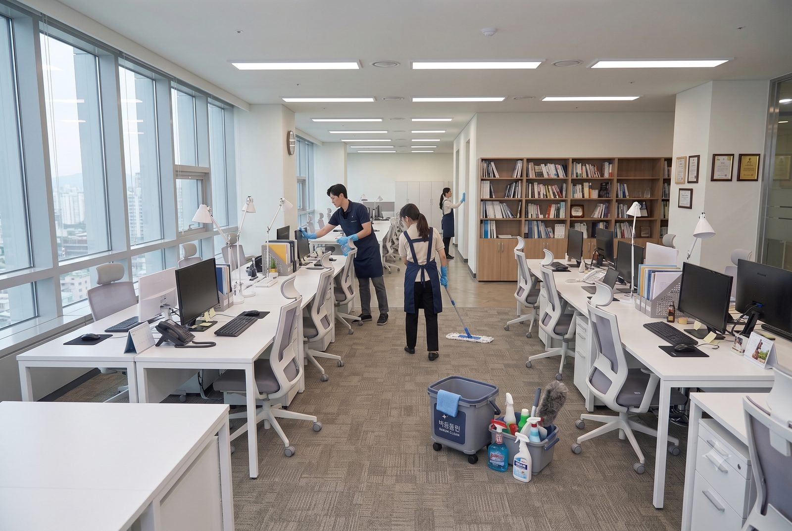
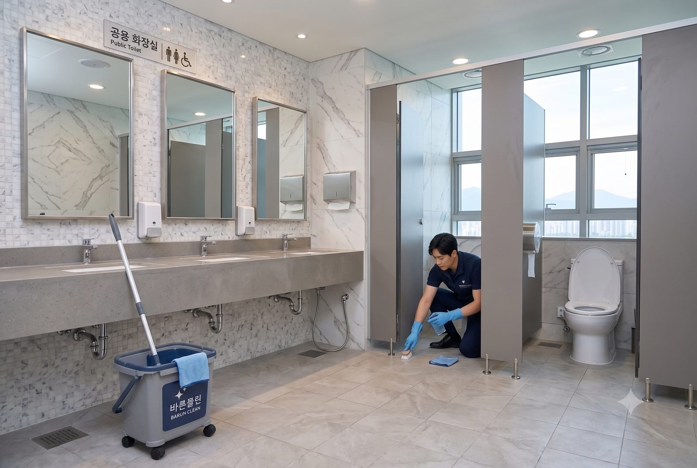

경기 수원 · 용인 · 오산 · 화성
깨끗한 공간을 만드는 전문 청소 파트너, 바른클린
친환경 세제와 전문 장비로 완성하는 프리미엄 클리닝 서비스
바른클린의 목표는 고객 감동입니다.
공간의 성격에 맞는 전문 서비스를 제공합니다.
Key Features
바른클린을 만나면,
당신의 공간도 달라집니다.
친환경 & 최신 전문 장비
인체에 무해한 친환경 세제와 고압·스팀 세척 장비를 구비해 안전하고 확실하게 청소합니다.
100% 직영 전문 인력
외주 하청 없이 교육을 이수한 전문 청소 마스터가 직접 방문해 서비스를 제공합니다.
철저한 A/S 및 책임 검수
고객 현장 검수 후 잔금을 결제하는 방식으로, 신속한 사후 관리까지 책임집니다.
Gallery
실제 시공 현장을
확인해 보세요.



Customer Center
궁금한 점을
바로 확인하세요.
어떤 공간까지 청소가 가능한가요?
가정집(입주·이사·거주청소)은 물론 사무실, 상가 등 오피스클리닝, 학교·학원·병원 등 스페셜클리닝까지 폭넓게 진행합니다.
서비스 지역은 어디까지인가요?
경기 수원 · 용인 · 오산 · 화성 지역을 중심으로 방문합니다. 인근 지역은 문의 시 확인해 드립니다.
견적은 어떻게 받을 수 있나요?
전화 또는 문의 폼으로 공간 정보를 남겨주시면, 현장 확인 후 작업 범위에 맞춘 견적을 안내해 드립니다.
청소 시 사용하는 세제는 안전한가요?
인체에 무해한 친환경 세제를 사용하며, 사람이 상주하는 공간은 안전성을 우선으로 고려해 진행합니다.
청소 후 미흡한 부분이 있으면 어떻게 하나요?
현장 검수 후 잔금을 결제하는 방식으로 진행하며, 이후에도 아쉬운 부분이 있다면 바로 연락 주세요. 확인 후 처리 방법을 안내해 드립니다.
-
★★★★★
“약속한 시간에 맞춰 꼼꼼하게 진행해주셔서 이사 당일 바로 들어갈 수 있었어요. 화장실 물때까지 깨끗하게 지워주셨습니다.”
수원 아파트 입주청소 이용
-
★★★★★
“매번 같은 팀이 방문해서 사무실 구조를 잘 알고 효율적으로 청소해 주십니다. 직원들 만족도가 높아요.”
용인 사무실 정기청소 이용
-
★★★★☆
“가격 대비 만족스러운 서비스입니다. 일정 변경 요청도 유연하게 도와주셔서 편하게 이용하고 있습니다.”
오산 거주청소 정기 이용